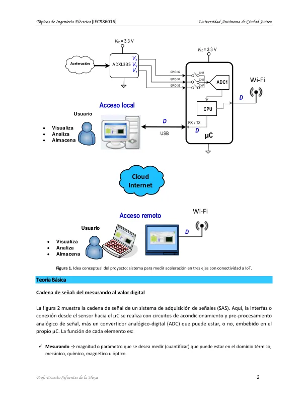
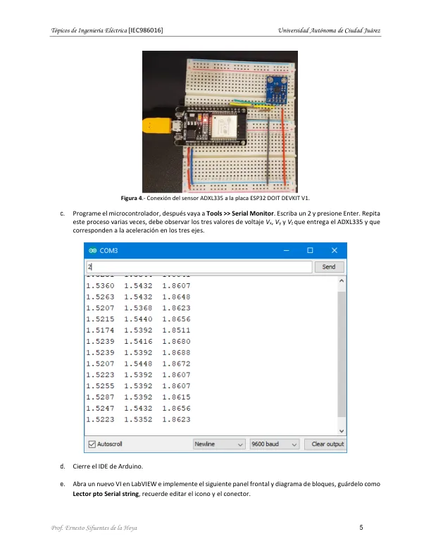
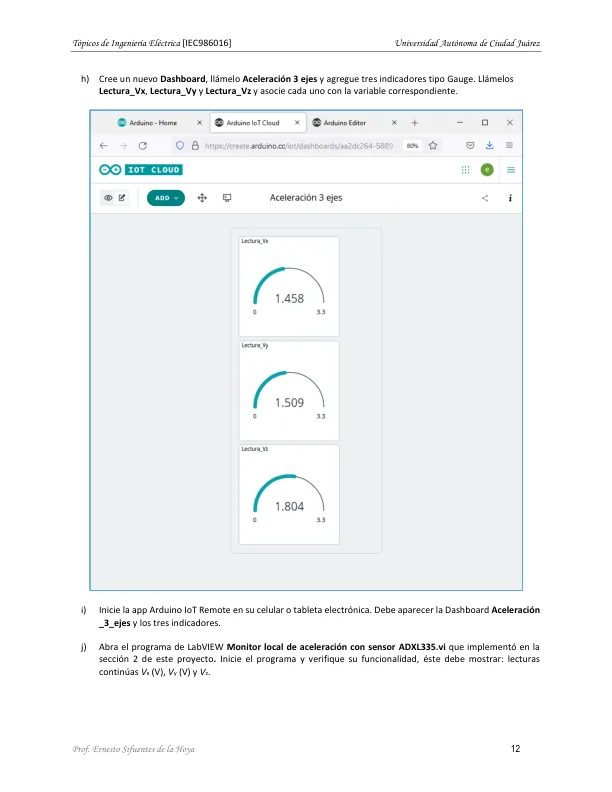

Video original del docente · requiere Internet
Abrir en YouTubeTÓPICOS DE INGENIERÍA ELÉCTRICA II · SEMANA 12 · 4 HORAS PRESENCIALES
Proyecto 2: monitor de aceleración y supervisión local/IoT
ADXL335, ESP32, monitor Python y Arduino Cloud. De la señal analógica de tres ejes a la visualización, las alarmas y el historial de supervisión.
Fundamentos Modelado Implementación Validación IA
1. Propósitos y organización de las clases
Clase 1 · 120 min
ADXL335 de tres ejes: señales analógicas, gravedad, sensibilidad, offset, ADC1 y captura serial. Montaje y pruebas locales con Python.
Evidencia: conexión, firmware, capturas de X/Y/Z con unidades y primeros CSV.
Clase 2 · 120 min
Supervisión remota IoT, dashboard y variables en Arduino Cloud; alarma de vibración, registro histórico y prueba de desconexión.
Evidencia: prototipo local/remoto, tabla de validación, análisis y reporte.
El Proyecto 2 original se conserva completo y su acceso permanece disponible. La adaptación reemplaza LabVIEW por Python y complementa el sistema con un flujo de alarmas e historial de datos. Las mediciones en la nube son resúmenes de baja frecuencia, no equivalentes a transmitir toda la forma de onda.
2. Cadena de señal y diagrama de conexiones
Alimentar el módulo conforme a la versión específica de placa GY-61; algunas incorporan regulador y otras no. Comparta GND. Verifique las tensiones antes de conectar el ADC. En el ESP32 clásico los GPIO39, 34 y 35 pertenecen a ADC1.


3. Modelo físico y tratamiento de datos
El ADXL335 tiene tres salidas analógicas con sesgo nominal cercano a la mitad de su alimentación y sensibilidad ratiométrica. A 3.0 V, una sensibilidad típica es de 300 mV/g; no debe tratarse como constante para todas las placas y alimentaciones.
La aceleración observada incluye la componente gravitacional según orientación. Para analizar vibraciones se utiliza RMS de la componente alterna, después de retirar el promedio de la ventana:
La frecuencia de muestreo objetivo del firmware USB es 250 tramas/s. Para una señal útil con ancho de banda cercano a 50 Hz ofrece margen respecto de Nyquist, pero la banda real depende de los capacitores del módulo y el aliasing sigue necesitando filtrado analógico apropiado. Los tres canales se convierten uno después de otro.
| Variable | Unidad | Observación |
|---|---|---|
| Vx, Vy, Vz | mV | Señal física del ADXL335, medida vía ADC calibrado |
| ax, ay, az | g | Valor estimado según cero y sensibilidad calibrados |
| RMS AC | g | Variación de cada eje sin componente media |
| Frecuencia | Hz | Interpretación solo dentro del ancho de banda muestreado |
4. Videos y explicación del docente
Video original del docente · requiere Internet
Abrir en YouTube5. Simulación interactiva del ADXL335
Simulación de vibraciones senoidales en X/Y/Z con gravedad estática, ruido y digitalización ideal. Modifique los parámetros y observe sensibilidad, código ADC, RMS AC y umbral; use esta sección para formular predicciones que después verificará físicamente.
RMS AC vectorial—
Estado de alarma—
Código ADC X, muestra final—
Muestreo / Nyquist—
6. Proyecto experimental: conexión, adquisición y verificación
- Lea el proyecto original y dibuje la cadena X/Y/Z → ADC1 → ESP32 → USB/Python y Wi-Fi/Cloud.
- Compruebe con DMM la alimentación del ADXL335, la GND común y que ninguna salida supere el margen permitido del ADC.
- Conecte X→GPIO39 (ADC1 CH3), Y→GPIO34 (CH6), Z→GPIO35 (CH7). Documente la orientación del sensor.
- Cargue el firmware de 250 Hz. Cierre el monitor serial y abra Python; seleccione puerto y pulse Conectar y Adquirir.
- Haga un registro con el sensor inmóvil. Calibre el nivel base dinámico y compare orientación y gravedad.
- Repita variaciones en cada eje; grafique aceleración y calcule RMS AC con Procesar.
- Active una alarma didáctica con umbral ajustado y documente su activación y restablecimiento.
- Interrumpa el enlace USB y verifique que la interfaz muestre «sin datos» y no finja lectura reciente.
- Repita la supervisión en Arduino Cloud con variables resumidas; verifique que el dashboard remoto corresponde a las señales observadas.
- Guarde CSV y documente mediciones, parámetros, incertidumbres, decisiones de diseño y fotografías.

Tabla de validación
| Ensayo | Resultado esperado | Evidencia real |
|---|---|---|
| Reposo / gravedad | Componente estática coherente con orientación | Lecturas y foto |
| Movimiento en X, Y, Z | Respuesta destacada en eje correspondiente | CSV y gráfica |
| Umbral RMS AC | Alarma y marca temporal | Registro de evento |
| Desconexión | Advertencia de dato obsoleto | Captura de pantalla |
| Cloud y Python | Coherencia cualitativa entre valores resumidos y datos locales | Dashboard y reporte |
7. Aplicación Python y supervisión remota
La interfaz de escritorio reproduce los controles de instrumentación del curso, con una gráfica X/Y/Z con unidades, indicadores de RMS, alarma de desconexión y CSV con etiqueta de origen.
Conectar
Selecciona puerto ESP32 o simulación.
Adquirir
Recibe tramas y muestra historia de tres ejes.
Procesar
Media, RMS total y RMS AC vectorial.
Guardar
CSV con marcas temporales y fuente.
Salir
Cierra puerto y aplicación.
Detener
Control auxiliar de seguridad y pausa.
Arduino Cloud: variables de baja tasa
Cree una Thing y las propiedades ax_g, ay_g, az_g, vib_rms_g y alarma_vibracion. Descargue el sketch base, utilice el thingProperties.h generado por la plataforma y configure sus credenciales personalmente. Se transmitirán indicadores cada segundo, no las 250 muestras/s.
La plantilla de Arduino Cloud depende de que se cree la Thing y el archivo de configuración del dispositivo. Es un componente configurable, no un programa independiente listo para compilar sin credenciales y propiedades generadas.
8. Evaluación y tutor de IA
1. ¿Las lecturas de GPIO39, 34 y 35 son simultáneas?
2. ¿Por qué calcular RMS AC tras eliminar la media?
3. ¿Conviene publicar todas las muestras a 250 Hz en Arduino Cloud?
Tutor de IA
El tutor debe preguntar por sensores, calibración ratiométrica, conversión secuencial, ancho de banda, RMS AC, histéresis de alarmas, pérdida de conexión y validez de resultados.
9. Proyecto 2: materiales y descargas
Proyecto 2 original · Monitor de aceleración e IoT (13 páginas)
Se conserva íntegro: circuito ADXL335, acceso local en LabVIEW y acceso remoto mediante Arduino Cloud.
Abrir PDFDescargar PDFGuía experimental adaptada · ADXL335 con ESP32 y Python
Conexiones, procesamiento, dos sesiones, tabla de validación y entregables.
Abrir guía PDFDescargar PDFAplicación Python + firmware USB + modelo y pruebas
En el ZIP del curso se incluyen todos los archivos de la Semana 12. En el HTML independiente pueden descargarse individualmente.
Firmware ESP32 USB (.ino)Monitor Python (.py)Modelo matemático (.py)DependenciasIniciar Windows (.bat)InstruccionesCuaderno Python (.ipynb)Plantilla opcional Arduino Cloud
Utiliza variables de resumen, configuradas por el estudiante en la plataforma. Precisa archivo thingProperties.h personalizado.
Documentación de apoyo: Fabricante ADXL335 · Arduino Cloud ESP32.